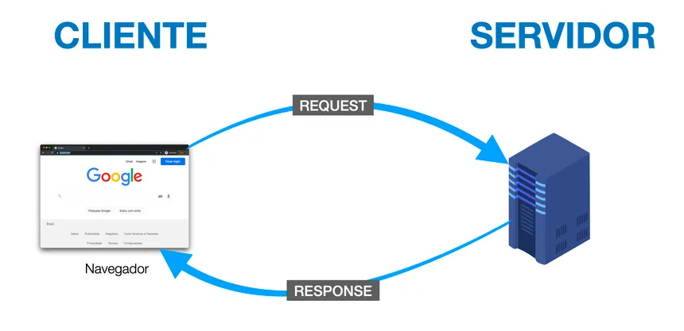

Quando o cliente (navegador) faz uma solicitação ao servidor, ele envia uma mensagem HTTP. Essa mensagem é enviada através das portas 80 ou 443 (esta última usada para HTTPS, a versão segura).
O Que é o Protocolo HTTP

A Internet é a infraestrutura de interconexão de redes de computadores , mas a WEB é um serviço específico que roda sobre essa infraestrutura. A comunicação na Web é regrada pelo protocolo HTTP (Hypertext Transfer Protocol).
HTTP é, essencialmente, a linguagem utilizada na comunicação entre o Cliente (o seu navegador) e o Servidor. Essa comunicação se dá em uma Arquitetura Cliente-Servidor, onde um programa denominado cliente (navegador) solicita algo ao servidor, que responde de acordo com sua programação.
Request e Response
- Request
- Método: O tipo de ação desejada (por exemplo, GET ou POST).
- URL: O endereço do recurso que se deseja acessar.
- Response
- Status Code: Um número que indica o resultado da requisição (ex: 200 OK, 404 Not Found).
- Content: O corpo da mensagem. Para a Web, o conteúdo mais comum é o código HTML.
- HTML: O código HTML recebido é então interpretado pelo navegador para exibir o documento, que vemos como uma página web.
Principais Elementos da Requisição:
Após receber e processar a requisição, o servidor gera uma Resposta HTTP e a envia de volta ao cliente. Quando a resposta chega, ela é processada pela aplicação cliente (o navegador), que pode exibi-la ou interpretá-la.